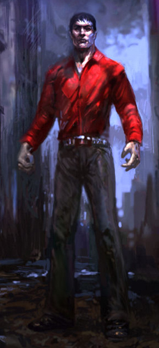

Reply With Quote
Reply With Quote

Q1: Are vampires immortal?
A1: Yes. While they can be killed (a very difficult process), they do not age or die from natural causes. They don't need food such as humans eat, and they don't need to breathe.
Q2: Do vampires have to drink blood to sustain themselves in unlife?
A2: Yes. A vampire is clinically dead - it's heart doesn't beat, it doesn't breathe, its skin is cold, it doesn't age - and yet it thinks, and walks, and plans, and speaks... and hunts and kills. To sustain its artificial immortality, the vampire must periodically consume blood, preferably human blood. Some penitent vampires eke out an existence on animal blood, and some ancient vampires must hunt and kill others of their kind to nourish themselves, but most vampires consume the blood of humanity. Our blood.
Vampires drain their prey of blood through the use of retractable fangs, which Cainites develop as soon as they first become undead. Each vampire can also mystically lick closed the wounds made by their fangs, thus concealing the evidence of their feeding.
Blood is all-important to the Kindred, for it is both the crux of their existence and the seat of their power. Mortal food, mortal air, mortal love - all of these things are meaningless to a vampire. Blood is the Kindred's only passion, and without it, they will quickly wither and fall dormant. Moreover, each vampire can use its stolen blood to perform amazing feats of healing, strength, and other supernatural abilities.
Q3: If you die from a vampire bite, do you become a vampire?
A3: No. If this were true, the world would be overrun with vampires (and not just in our media). Vampires do feed on human blood, and they do sometimes kill their prey - but most humans who die from a vampire's attack simply perish. To return as undead, the victim must be drained of blood and subsequently be fed a bit of the attacking vampire's blood. This process, called The Embrace, causes the mystical transformation from human to undead.
Q4: Are vampires demons?
A4: No... and yes. Vampires are not demons per se, but a combination of tragic factors draws them inexorably toward wicked deeds. In the beginning, the newly-created vampire thinks and acts much as they did while living. They don't immediately turn into an evil, sadistic monster. However, the vampire soon discovers their overpowering hunger for blood, and realizes that their existence depends on feeding on humanity. In many ways, the vampire's mindset changes - she adopts a set of attitudes less suited to a communal omnivore and more befitting a solitary predator.
At first reluctant to kill, the vampire is finally forced into murder by circumstance or need - and killing becomes easier as the years pass. Realizing that they themselves are untrustworthy, they wall themselves away from the mortal world. Realizing that their existence depends on secrecy and controls, they become manipulators. And things only degenerate as the years turn to decades and then centuries, and the vampire kills over and over, watching the people they loved age and die. Human life, so cheap in comparison to their own, becomes of less and less value, until the mortal 'herd' means no more to them then a horde of annoying insects. Vampire elders are among the most jaded, unfeeling and paranoid - in short, monstrous - beings the world has ever known. Maybe they are not demons exactly - but at that point, who can tell the difference?
Q5: Are vampires burned by sunlight?
A5: Yes. Vampires must avoid the sun or die, though a few can bear the sunlight's touch for more than a very short period of time. Vampires are nocturnal creatures, and most find it extremely difficult to remain awake during the day, even within sheltered areas.
Q6: Does garlic repulse vampires?
A6: No. These are myths, and only a very small fraction of vampires are even inconvenienced by them.
Q7: Do crosses and holy symbols repulse vampires?
A7: The answer is generally no. However, if the wielder has great faith in the power it represents, a vampire may suffer ill effects from the brandishing of the symbol.
Q8: Do vampires die from a stake to the heart?
A8: No. However, a wooden stake - or arrow, crossbow bolt, etc - through the heart will paralyze the monster until it is removed.
Q9: Can vampires heal grievous wounds, command animals and possess the strength of 10 men?
A9: Yes and no. The power of a vampire increases with age. Young, newly created vampires are often just a little more powerful than humans. But as a vampire grows in understanding and knowledge, they learn to use their blood to evoke secret supernatural powers, which vampires call Disciplines. Elders' power can often rival those of fictional Lestat or Dracula, and the true ancients - the Methuselahs and the Antediluvians who have stalked the nights for thousands of years - often possess literally godlike power.
|
|
|
Close Help | ||||||||||||||